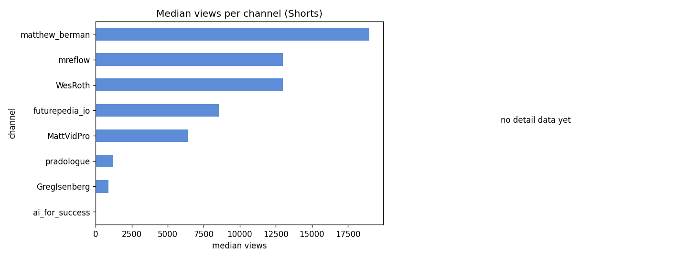

10 / Real Data Works
数据能力：三个可复跑的真实研究
所有数字可复跑验证，溯源底账见配套文档《03_复现记录》（含全部命令与日志路径）。
📊 Shorts 爆款研究
1,240
条真实 YouTube Shorts（8 个 AI 赛道英文频道，yt-dlp 免登录采集）
| 爆款标题长度 | 35.9 vs 46.8 字符 |
| 标题含数字占比 | 23.5% vs 14.9% |
| 爆款平均播放 | 142,599 vs 7,463 |
💗 情感分析验证
65.98%
与人工标注一致率（10,000 条真实推文，F1 = 0.655，0.05 ms/条）
| 情绪分布(2,000条) | Happy 897 · Surprise 369 · Sad 312 · Fear 295 · Angry 127 |
| 标题情感 | NEU 57.5% 为主（1,240条复跑） |
🔭 竞品生态盘点
8
个高星开源项目对比（AI 陪伴/社媒工具赛道，GitHub API 检索）
| 代表项目 | SillyTavern ⭐35k · Postiz ⭐41k · AstrBot ⭐46k |
| 结论 | 技术栈已开源化，壁垒在人设/内容/社群 |

图1：爆款 vs 非爆款指标对比（真实数据 · 可复跑）

图2：情感/情绪分布（真实数据 · 可复跑）